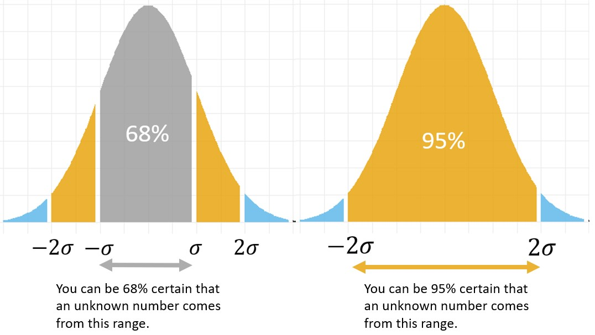

Welcome
One of the problems of analyzing data sets is that it is easy to miss the wood for the trees. Extracting the salient features out of complex data, statistical indicators help us tease out the signal from the noise.
Two types of indicators are known as measures of
centrality and measures of spread.
Measures of central tendency: mean and median
For a refresher on measures of central tendency, please watch this video.
You want to estimate the average time you wait at the bus stop. Every time you reach it, you set your stopwatch and measure the time until the bus arrives. After five days, you collected five measurements (in minutes): 10, 10, 15, 18, 22.
| The mean and the median are exactly the same in this exercise, this is a sign that the mean is right in the middle of our sample. |  Attribution: publicdomainq.net |
We observe the numbers: \(\{7, 8, 8 , 9, 20, 20, 30\}\)
Notice how in this example, where there is one extreme value (at 100), the mean is larger than the median. In general, extreme values affect the mean much more than the median.
The mean and median are known as measures of central tendency. They both give a sense of what the “center” of the distribution is, although they do it in slightly different ways. If you need to predict the next number coming from a distribution, choose which measure of central tendency is most appropriate, depending on your goals and the cost and benefits of making an error.
The mean is the sum of the numbers in the set divided by the size of the set.

The median is the middle number of the set when it is written in ascending order. If there are an even number of items in the set, the median is the mean of the middle two numbers.
The two measures are similar in that they provide a sense of a typical number in our data set. Yet they also behave differently: the mean tends to be influenced by extreme values, but the median is not. You can also use R to calculate these measures.
Of course you can use code to calculate the mean and the median! For example, try to calculate the mean of the numbers {1, 9, 10}
# calculate the mean of the numbers {1, 9, 10}.
c(___, ___, ___) %>% mean()# calculate the median of the numbers {1, 9, 10}.
___ %>% median()Because there is a clustering of two numbers close together \(\{9,10\}\), the “outlier” \(\{1\}\) has more of an effect on the mean than on the median, which is why, in this exercise, the mean is smaller than the median.
Choose a value between the mean and the median of the set \(X=\{1, 9, 10\}\) and add it in the code below. Then run the code and convince yourself that this new number increased the mean and decreased the median:
x_new_value <- ___
# The mean of the original set
old_mean <- c(1, 9, 10) %>% mean()
# The mean with your new value
new_mean <- c(1, 9, 10, ___) %>% mean()
glue("Holla! Adding the value {x_new_value} increased the mean from {old_mean} to {new_mean}!") %>%
print()
# The median of the original set
old_median <- c(1, 9, 10) %>% median()
# The median goes down after adding the the new value
new_median <- c(1, 9, 10, ___) %>% median()
glue("Gracious me! The same value decreased the median from {old_median} to {new_median}!")%>%
print()x_new_value <- 7
# The mean of the original set
old_mean <- c(1, 9, 10) %>% mean()
# The mean with your new value
new_mean <- c(1, 9, 10, x_new_value) %>% mean()
glue("Holla! Adding the value {x_new_value}
increased the mean from {old_mean} to {new_mean}!") %>%
print()
# The median of the original set
old_median <- c(1, 9, 10) %>% median()
# The median goes down after adding the the new value
new_median <- c(1, 9, 10, x_new_value) %>% median()
glue("Gracious me! The same value decreased
the median from {old_median} to {new_median}!")%>%
print()Central tendency: a conclusion
The mean and median are both measures of central tendency, but they have different properties: extreme values influences the mean but not the median.
Measures of central tendency are important, because they tell us something about the typical values in a set. If we know that a number comes from a set and we want to predict it, our best bet is to choose a measure of central tendency.
But how certain are we, that we will get our prediction right? Imagine that making a mistake in your prediction would incur a cost. What cost would you expect to pay, on average? Measures of centrality don’t give us an answer to these question. To estimate the uncertainty in our data, or to know what cost we will need to pay for our mistakes, we need to turn to measures of spread.
Spread: Range and MAD
For a refresher on measures of spread, please stop and watch this video.
Suppose we want to describe variation in the data. One way is to use the range, which describes the distance between the smallest and largest value in a set.
Consider the following two sets, \(A\) and \(B\).
The range is often an inappropriate description of variation in data, because it is sensitive only to the extreme values, values that don’t necessarily represent most data points because they don’t necessarily occur that often.
In particular, range ignores all the values in a set except for the largest and smallest, and therefore tells us nothing about the distribution of the values within the data set
Mean Absolute Deviation (MAD)
Remember the data we collected in the previous example, while waiting for the bus? Here are our data-points again \(X=\{10, 10, 15, 18, 22\}\)

One measure of spread would consider the distances between each of the data points and the sample mean \(\bar{X}=15\). These distances are as follows:
\[ \text{distance}_i=X_i - \bar{X}=\{10 - 15, 10- 15, 15 - 15,\cdots \}=\{-5, -15, 0,\cdots \} \]
In the question above, you calculated a very important measure of spread: the “mean absolute deviation” also known as MAD. To calculate MAD, simply find the the mean value of a set (or the sample mean, \(\bar{X}\)) and compare it with each value in the set (or \(X_i\)). The distance between these two numbers is called the deviation. Now find the mean of the absolute value of these deviations, and voila!
The mean absolute deviation is a helpful statistic as it allows us to represent the spread of a set of data-points with a single number. A set with a MAD of 4 has values that are, on average, 4 units away from the mean.
Consider the following two sets, \(A\) and \(B\)
The two MADs
In addition to Mean Absolute Deviation there is a second (in fact more popular) MAD, known as Median Absolute Deviation.
- Mean Absolute Deviation calculates the mean of the absolute differences from the mean,
- Median Absolute Deviation calculates the median value of the absolute difference from the median.
For example, consider our bus-waiting data set \(X=\{10, 10, 15, 18, 22\}\). Let’s calculated both MADs:
- The set’s mean is 15, and set of its deviations from the mean are \(\{-5, -5, 0, 3, 7\}\). Taking the mean of the absolute deviations we find that the mean average deviation is \(\frac{5+5+0+3+7}{5}=4\).
- The set’s median is the same as its mean and so the absolute deviations from the median are the same as above. To find the median we first need to arrange the absolute values in order \(\{0, 3, 5, 5, 7\}\) the number 5 in the middle is our Median Absolute Deviation.
In this case we do not see much of a difference between the two MADs, but recall that the mean is more susceptible to extreme values than the median. Adding an extreme value will therefore affect the Mean Absolute Deviance much more than the Median Absolute Deviance.
Spread: Variance and SD
Though simple to use and intuitive as a measure of spread, the two MADs have some unwanted properties. First, the absolute value of a number has no derivative at zero, which makes it mathematically inconvenient to use. In addition, the mean deviation from the mean can be the same as the mean deviation from other points along the continuum, so as a measure of spread, MAD is not uniquely associated with the mean. This becomes a problem, when we would like our measure of dispersion to be a mathematical optimum of some objective function.
To address this problem, instead of taking the absolute value of differences between the mean and data points, we square the deviance (thereby transforming any negative deviance to positive). We then calculate the mean of the squares.
\[ \text{Variance}=\frac{\text{sum of (squared differences between datapoints and mean)}}{\text{number of values in set}} \]
The result is called the variance.
Consider the two sets of data in Figure 1 below.

Consider the three sets of data in Figure 2 below.
The questions above show that extreme values affect the variance much more than they affect the MAD. In fact, in the example of a set consisting of ninety-nine times the value zero and one time the value 100 \(\{0,0,0,0,\ldots,100 \}\) the variance of the set (which is 99) is 50 times larger than the MAD (which is 1.98).
This example may look a bit contrived, but in fact it represents a common pattern of rare but very extreme events, such as crises or natural breakdowns. The zeros reflect nothing out of the ordinary happening most of the time. But then one big event occurs, just like that, out of the blue.
It is not surprising that this example was inspired by a (very much recommended) tutorial titled: Breaking down intuitively the concept of standard deviation. Why people don’t get it by the great Nassim Nicholas Taleb, the author of the bestseller: The Black Swan: The Impact of the Highly Improbable.
Standard deviation
Variance tends to be difficult to compare mentally to the actual data. While it’s intuitive to think, for example, that most of the data is about 4 points away from the mean (i.e., MAD) squaring makes it difficult to make sense of the spread or compare between sets.
A more intuitive measure of spread is the square root of the variance, also known as the standard deviation.
\[ \text{sd}=\sqrt{\text{variance}} \]

This formula for the variance works as a measure of spread for our particular data-set.
But often, we are not interested in the features of our sample per se. Our goal is broader: we want to estimate the variance for the entire population. Remember that our data-set is only a sample taken from a population, i.e., only a small portion of the entire population.
When you want to estimate the variance of the population, the formula above turns out to be biased, as it underestimates the real variation in the population. The reason for this is that a sample, in particular when it is small, is unlikely to capture the rarer, more extreme values in the population.
To correct for this bias, we will need to replace the denominator \(n\) with \(n-1\). By dividing by a smaller number, we get a larger estimate, which turns out to be unbiased. The unbiased sample estimate for the standard deviation of the population is denoted with the letter \(s\), and its square calculated as follows:
\[ s^2=\frac{\sum(X_i-\bar{X})}{n-1} \]
Notice that when data represents a sample of a population we will have to use a different version of the variance formula.
The normal distribution
We often collect data that is continuous: heights of people, systolic blood pressure in the population, birth weight, measurement errors in scientific experiments, students exam scores and many more.
Beyond being continuous, these data often have similar features because the shape of the data can be approximated as a normal distribution, or a bell curve.
Features of the normal distribution
The most important features common to normally distributed data are the following:
- Normal distributions have a typical, central range of values that are commonly observed.
- Extreme values are highly improbable, practically impossible to observe.
- The distribution is single peaked and symmetric around the peak.
Once you establish that your data can be approximated by a normal distribution, you can predict how frequently you might observe a range of values. Given a certain value of interest, calculate its distance from the center, and how many standard deviations fill that distance.
A well-known application of this is the 68 - 95 - 99.7 rule:
- approximately 68% of the data lies within one standard deviation away from the mean (34% on each side)
- approximately 95% of the data lies within 2 standard deviations of the mean (about 47.5% on each side)
- approximately 99.7% of the data lies within 3 standard deviations of the mean (about 49.85% on each side)

Recap
Measures of central tendency and measures of spread are numbers that give us a sense about the most important features of a distribution.
Measures of central tendency give us the typical number in the distribution. In this tutorial we explored two such measures: mean and median, highlighting the differences between the two. We found that if you need to predict the next number in a sequence, your best bet would be one of the measures of centrality.
Measures of spread give us a sense of the variation of our distribution. In this tutorial we explored several such measures: range, MAD, variance and the standard deviation. The measure of spread can be interpreted as an indicator of our average error, if we were to bet on the next value.
The normal distribution is a common approximation for the distribution of data in large range of disciplines and applications. If you know that your data is (approximately) normally distributed and you have an estimation of its mean and standard deviation, you would know that your data has a typical, central range of values that are commonly observed, that extreme values are highly improbable and that the distribution is single peaked and symmetric. Moreover, you would be able to calculate the probability to observing values at any range.